Creational design patterns abstract the instantiation process. They help make a system independent of how its objects are created, composed, and represented. A class creational pattern uses inheritance to vary the class that’s instantiated, whereas an object creational pattern will delegate instantiation to another object.
Creational patterns become important as systems evolve to depend more on object composition than class inheritance. As that happens, emphasis shifts away from hard-coding a fixed set of behaviors toward defining a smaller set of fundamental behaviors that can be composed into any number of more complex ones. Thus creating objects with particular behaviors requires more than simply instantiating a class.
There are two recurring themes in these patterns. First, they all encapsulate knowledge about which concrete classes the system uses. Second, they hide how instances of these classes are created and put together. All the system at large knows about the objects is their interfaces as defined by abstract classes. Consequently, the creational patterns give you a lot of flexibility in what gets created, who creates it, how it gets created, and when. They let you configure a system with “product” objects that vary widely in structure and functionality. Configuration can be static (that is, specified at compile-time) or dynamic (at run-time).
Sometimes creational patterns are competitors. For example, there are cases when either Prototype (117) or Abstract Factory (87) could be used profitably. At other times they are complementary: Builder (97) can use one of the other patterns to implement which components get built. Prototype (117) can use Singleton (127) in its implementation.
Because the creational patterns are closely related, we’ll study all five of them together to highlight their similarities and differences. We’ll also use a common example—building a maze for a computer game—to illustrate their implementations. The maze and the game will vary slightly from pattern to pattern. Sometimes the game will be simply to find your way out of a maze; in that case the player will probably only have a local view of the maze. Sometimes mazes contain problems to solve and dangers to overcome, and these games may provide a map of the part of the maze that has been explored.
We’ll ignore many details of what can be in a maze and whether a maze game has a single or multiple players. Instead, we’ll just focus on how mazes get created. We define a maze as a set of rooms. A room knows its neighbors; possible neighbors are another room, a wall, or a door to another room.
The classes Room, Door, and Wall define the components of the maze used in all our examples. We define only the parts of these classes that are important for creating a maze. We’ll ignore players, operations for displaying and wandering around in a maze, and other important functionality that isn’t relevant to building the maze.
The following diagram shows the relationships between these classes:
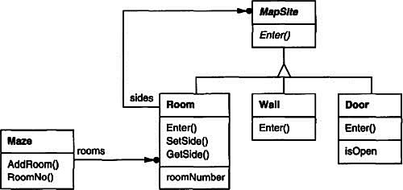
Each room has four sides. We use an enumeration Direction in C++ implementations to specify the north, south, east, and west sides of a room:
enum Direction {North, South, East, West};
The Smalltalk implementations use corresponding symbols to represent these directions.
The class MapSite is the common abstract class for all the components of a maze. To simplify the example, MapSite defines only one operation, Enter. Its meaning depends on what you’re entering. If you enter a room, then your location changes. If you try to enter a door, then one of two things happen: If the door is open, you go into the next room. If the door is closed, then you hurt your nose.
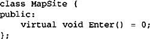
Enter provides a simple basis for more sophisticated game operations. For example, if you are in a room and say “Go East,” the game can simply determine which MapSite is immediately to the east and then call Enter on it. The subclass-specific Enter operation will figure out whether your location changed or your nose got hurt. In a real game, Enter could take the player object that’s moving about as an argument.
Room is the concrete subclass of MapSite that defines the key relationships between components in the maze. It maintains references to other MapSite objects and stores a room number. The number will identify rooms in the maze.
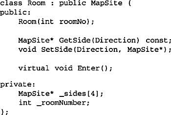
The following classes represent the wall or door that occurs on each side of a room.
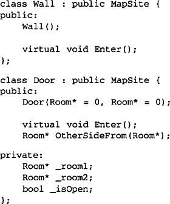
We need to know about more than just the parts of a maze. We’ll also define a Maze class to represent a collection of rooms. Maze can also find a particular room given a room number using its RoomNo operation.
RoomNo could do a look-up using a linear search, a hash table, or even a simple array. But we won’t worry about such details here. Instead, we’ll focus on how to specify the components of a maze object.
Another class we define is MazeGame, which creates the maze. One straightforward way to create a maze is with a series of operations that add components to a maze and then interconnect them. For example, the following member function will create a maze consisting of two rooms with a door between them:
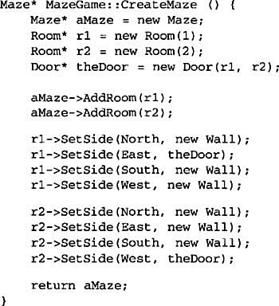
This function is pretty complicated, considering that all it does is create a maze with two rooms. There are obvious ways to make it simpler. For example, the Room constructor could initialize the sides with walls ahead of time. But that just moves the code somewhere else. The real problem with this member function isn’t its size but its inflexibility. It hard-codes the maze layout. Changing the layout means changing this member function, either by overriding it—which means reimplementing the whole thing—or by changing parts of it—which is error-prone and doesn’t promote reuse.
The creational patterns show how to make this design more flexible, not necessarily smaller. In particular, they will make it easy to change the classes that define the components of a maze.
Suppose you wanted to reuse an existing maze layout for a new game containing (of all things) enchanted mazes. The enchanted maze game has new kinds of components, like DoorNeedingSpell, a door that can be locked and opened subsequently only with a spell; and EnchantedRoom, a room that can have unconventional items in it, like magic keys or spells. How can you change CreateMaze easily so that it creates mazes with these new classes of objects?
In this case, the biggest barrier to change lies in hard-coding the classes that get instantiated. The creational patterns provide different ways to remove explicit references to concrete classes from code that needs to instantiate them:
• If CreateMaze calls virtual functions instead of constructor calls to create the rooms, walls, and doors it requires, then you can change the classes that get instantiated by making a subclass of MazeGame and redefining those virtual functions. This approach is an example of the Factory Method (107) pattern.
• If CreateMaze is passed an object as a parameter to use to create rooms, walls, and doors, then you can change the classes of rooms, walls, and doors by passing a different parameter. This is an example of the Abstract Factory (87) pattern.
• If CreateMaze is passed an object that can create a new maze in its entirety using operations for adding rooms, doors, and walls to the maze it builds, then you can use inheritance to change parts of the maze or the way the maze is built. This is an example of the Builder (97) pattern.
• If CreateMaze is parameterized by various prototypical room, door, and wall objects, which it then copies and adds to the maze, then you can change the maze’s composition by replacing these prototypical objects with different ones. This is an example of the Prototype (117) pattern.
The remaining creational pattern, Singleton (127), can ensure there’s only one maze per game and that all game objects have ready access to it—without resorting to global variables or functions. Singleton also makes it easy to extend or replace the maze without touching existing code.
Provide an interface for creating families of related or dependent objects without specifying their concrete classes.
Kit
Consider a user interface toolkit that supports multiple look-and-feel standards, such as Motif and Presentation Manager. Different look-and-feels define different appearances and behaviors for user interface “widgets” like scroll bars, windows, and buttons. To be portable across look-and-feel standards, an application should not hard-code its widgets for a particular look and feel. Instantiating look-and-feel-specific classes of widgets throughout the application makes it hard to change the look and feel later.
We can solve this problem by defining an abstract WidgetFactory class that declares an interface for creating each basic kind of widget. There’s also an abstract class for each kind of widget, and concrete subclasses implement widgets for specific look-and-feel standards. WidgetFactory’s interface has an operation that returns a new widget object for each abstract widget class. Clients call these operations to obtain widget instances, but clients aren’t aware of the concrete classes they’re using. Thus clients stay independent of the prevailing look and feel.
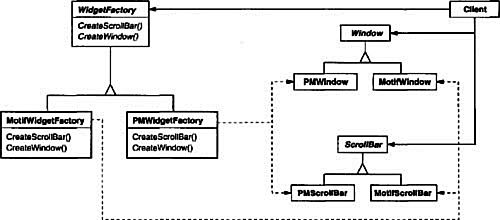
There is a concrete subclass of WidgetFactory for each look-and-feel standard. Each subclass implements the operations to create the appropriate widget for the look and feel. For example, the CreateScrollBar operation on the MotifWidgetFactory instantiates and returns a Motif scroll bar, while the corresponding operation on the PMWidgetFactory returns a scroll bar for Presentation Manager. Clients create widgets solely through the WidgetFactory interface and have no knowledge of the classes that implement widgets for a particular look and feel. In other words, clients only have to commit to an interface defined by an abstract class, not a particular concrete class.
A WidgetFactory also enforces dependencies between the concrete widget classes. A Motif scroll bar should be used with a Motif button and a Motif text editor, and that constraint is enforced automatically as a consequence of using a MotifWidgetFactory.
Use the Abstract Factory pattern when
• a system should be independent of how its products are created, composed, and represented.
• a system should be configured with one of multiple families of products.
• a family of related product objects is designed to be used together, and you need to enforce this constraint.
• you want to provide a class library of products, and you want to reveal just their interfaces, not their implementations.
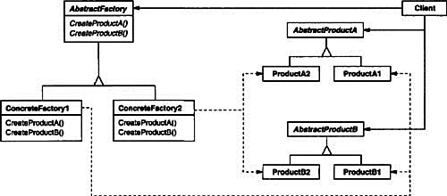
• AbstractFactory (WidgetFactory)
– declares an interface for operations that create abstract product objects.
• ConcreteFactory (MotifWidgetFactory, PMWidgetFactory)
– implements the operations to create concrete product objects.
• AbstractProduct (Window, ScrollBar)
– declares an interface for a type of product object.
• ConcreteProduct (MotifWindow, MotifScrollBar)
– defines a product object to be created by the corresponding concrete factory.
– implements the AbstractProduct interface.
• Client
– uses only interfaces declared by AbstractFactory and AbstractProduct classes.
• Normally a single instance of a ConcreteFactory class is created at run-time. This concrete factory creates product objects having a particular implementation. To create different product objects, clients should use a different concrete factory.
• AbstractFactory defers creation of product objects to its ConcreteFactory subclass.
The Abstract Factory pattern has the following benefits and liabilities:
1. It isolates concrete classes. The Abstract Factory pattern helps you control the classes of objects that an application creates. Because a factory encapsulates the responsibility and the process of creating product objects, it isolates clients from implementation classes. Clients manipulate instances through their abstract interfaces. Product class names are isolated in the implementation of the concrete factory; they do not appear in client code.
2. It makes exchanging product families easy. The class of a concrete factory appears only once in an application—that is, where it’s instantiated. This makes it easy to change the concrete factory an application uses. It can use different product configurations simply by changing the concrete factory. Because an abstract factory creates a complete family of products, the whole product family changes at once. In our user interface example, we can switch from Motif widgets to Presentation Manager widgets simply by switching the corresponding factory objects and recreating the interface.
3. It promotes consistency among products. When product objects in a family are designed to work together, it’s important that an application use objects from only one family at a time. AbstractFactory makes this easy to enforce.
4. Supporting new kinds of products is difficult. Extending abstract factories to produce new kinds of Products isn’t easy. That’s because the AbstractFactory interface fixes the set of products that can be created. Supporting new kinds of products requires extending the factory interface, which involves changing the AbstractFactory class and all of its subclasses. We discuss one solution to this problem in the Implementation section.
Here are some useful techniques for implementing the Abstract Factory pattern.
1. Factories as singletons. An application typically needs only one instance of a ConcreteFactory per product family. So it’s usually best implemented as a Singleton (127).
2. Creating the products. AbstractFactory only declares an interface for creating products. It’s up to ConcreteProduct subclasses to actually create them. The most common way to do this is to define a factory method (see Factory Method (107)) for each product. A concrete factory will specify its products by overriding the factory method for each. While this implementation is simple, it requires a new concrete factory subclass for each product family, even if the product families differ only slightly.
If many product families are possible, the concrete factory can be implemented using the Prototype (117) pattern. The concrete factory is initialized with a prototypical instance of each product in the family, and it creates a new product by cloning its prototype. The Prototype-based approach eliminates the need for a new concrete factory class for each new product family.
Here’s a way to implement a Prototype-based factory in Smalltalk. The concrete factory stores the prototypes to be cloned in a dictionary called partCatalog. The method make: retrieves the prototype and clones it:
The concrete factory has a method for adding parts to the catalog.
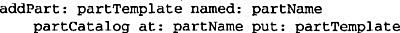
Prototypes are added to the factory by identifying them with a symbol:
A variation on the Prototype-based approach is possible in languages that treat classes as first-class objects (Smalltalk and Objective C, for example). You can think of a class in these languages as a degenerate factory that creates only one kind of product. You can store classes inside a concrete factory that create the various concrete products in variables, much like prototypes. These classes create new instances on behalf of the concrete factory. You define a new factory by initializing an instance of a concrete factory with classes of products rather than by subclassing. This approach takes advantage of language characteristics, whereas the pure Prototype-based approach is language-independent.
Like the Prototype-based factory in Smalltalk just discussed, the class-based version will have a single instance variable partCatalog, which is a dictionary whose key is the name of the part. Instead of storing prototypes to be cloned, partCatalog stores the classes of the products. The method make: now looks like this:
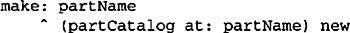
3. Defining extensible factories. AbstractFactory usually defines a different operation for each kind of product it can produce. The kinds of products are encoded in the operation signatures. Adding a new kind of product requires changing the AbstractFactory interface and all the classes that depend on it.
A more flexible but less safe design is to add a parameter to operations that create objects. This parameter specifies the kind of object to be created. It could be a class identifier, an integer, a string, or anything else that identifies the kind of product. In fact with this approach, AbstractFactory only needs a single “Make” operation with a parameter indicating the kind of object to create. This is the technique used in the Prototype- and the class-based abstract factories discussed earlier.
This variation is easier to use in a dynamically typed language like Smalltalk than in a statically typed language like C++. You can use it in C++ only when all objects have the same abstract base class or when the product objects can be safely coerced to the correct type by the client that requested them. The implementation section of Factory Method (107) shows how to implement such parameterized operations in C++.
But even when no coercion is needed, an inherent problem remains: All products are returned to the client with the same abstract interface as given by the return type. The client will not be able to differentiate or make safe assumptions about the class of a product. If clients need to perform subclass-specific operations, they won’t be accessible through the abstract interface. Although the client could perform a downcast (e.g., with dynamic_cast in C++), that’s not always feasible or safe, because the downcast can fail. This is the classic trade-off for a highly flexible and extensible interface.
We’ll apply the Abstract Factory pattern to creating the mazes we discussed at the beginning of this chapter.
Class MazeFactory can create components of mazes. It builds rooms, walls, and doors between rooms. It might be used by a program that reads plans for mazes from a file and builds the corresponding maze. Or it might be used by a program that builds mazes randomly. Programs that build mazes take a MazeFactory as an argument so that the programmer can specify the classes of rooms, walls, and doors to construct.
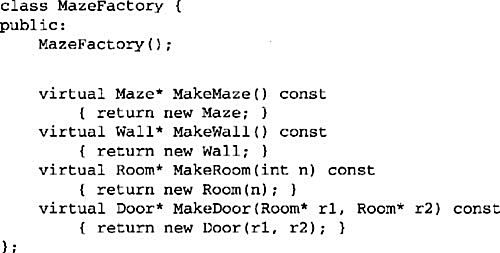
Recall that the member function CreateMaze (page 84) builds a small maze consisting of two rooms with a door between them. CreateMaze hard-codes the class names, making it difficult to create mazes with different components.
Here’s a version of CreateMaze that remedies that shortcoming by taking a MazeFactory as a parameter:
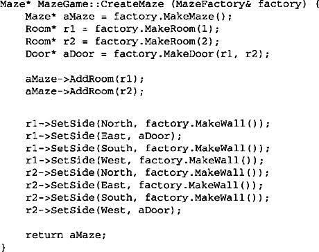
We can create EnchantedMazeFactory, a factory for enchanted mazes, by subclassing MazeFactory. EnchantedMazeFactory will override different member functions and return different subclasses of Room, Wall, etc.
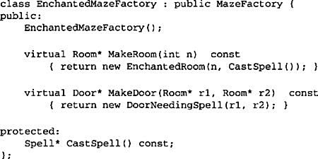
Now suppose we want to make a maze game in which a room can have a bomb set in it. If the bomb goes off, it will damage the walls (at least). We can make a subclass of Room keep track of whether the room has a bomb in it and whether the bomb has gone off. We’ll also need a subclass of Wall to keep track of the damage done to the wall. We’ll call these classes RoomWithABomb and BombedWall.
The last class we’ll define is BombedMazeFactory, a subclass of MazeFactory that ensures walls are of class BombedWall and rooms are of class RoomWithABomb. BombedMazeFactory only needs to override two functions:
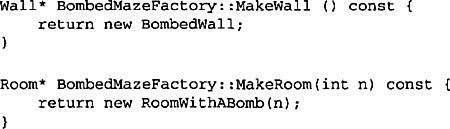
To build a simple maze that can contain bombs, we simply call CreateMaze with a BombedMazeFactory.
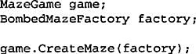
CreateMaze can take an instance of EnchantedMazeFactory just as well to build enchanted mazes.
Notice that the MazeFactory is just a collection of factory methods. This is the most common way to implement the Abstract Factory pattern. Also note that MazeFactory is not an abstract class; thus it acts as both the AbstractFactory and the ConcreteFactory. This is another common implementation for simple applications of the Abstract Factory pattern. Because the MazeFactory is a concrete class consisting entirely of factory methods, it’s easy to make a new MazeFactory by making a subclass and overriding the operations that need to change.
CreateMaze used the SetSide operation on rooms to specify their sides. If it creates rooms with a BombedMazeFactory, then the maze will be made up of RoomWithABomb objects with BombedWall sides. If RoomWithABomb had to access a subclass-specific member of BombedWall, then it would have to cast a reference to its walls from Wall* to BombedWall*. This downcasting is safe as long as the argument is in fact a BombedWall, which is guaranteed to be true if walls are built solely with a BombedMazeFactory.
Dynamically typed languages such as Smalltalk don’t require downcasting, of course, but they might produce run-time errors if they encounter a Wall where they expect a subclass of Wall. Using Abstract Factory to build walls helps prevent these run-time errors by ensuring that only certain kinds of walls can be created.
Let’s consider a Smalltalk version of MazeFactory, one with a single make operation that takes the kind of object to make as a parameter. Moreover, the concrete factory stores the classes of the products it creates.
First, we’ll write an equivalent of CreateMaze in Smalltalk:
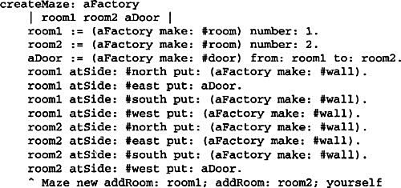
As we discussed in the Implementation section, MazeFactory needs only a single instance variable partCatalog to provide a dictionary whose key is the class of the component. Also recall how we implemented the make: method:
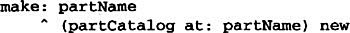
Now we can create a MazeFactory and use it to implement createMaze. We’ll create the factory using a method createMazeFactory of class MazeGame.
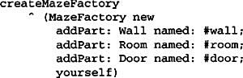
A BombedMazeFactory or EnchantedMazeFactory is created by associating different classes with the keys. For example, an EnchantedMazeFactory could be created like this:
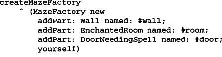
Interviews uses the “Kit” suffix [Lin92] to denote AbstractFactory classes. It defines WidgetKit and DialogKit abstract factories for generating look-and-feel-specific user interface objects. Interviews also includes a LayoutKit that generates different composition objects depending on the layout desired. For example, a layout that is conceptually horizontal may require different composition objects depending on the document’s orientation (portrait or landscape).
ET++ [WGM88] uses the Abstract Factory pattern to achieve portability across different window systems (X Windows and SunView, for example). The WindowSystem abstract base class defines the interface for creating objects that represent window system resources (MakeWindow, MakeFont, MakeColor, for example). Concrete subclasses implement the interfaces for a specific window system. At run-time, ET++ creates an instance of a concrete WindowSystem subclass that creates concrete system resource objects.
AbstractFactory classes are often implemented with factory methods (Factory Method (107)), but they can also be implemented using Prototype (117).
A concrete factory is often a singleton (Singleton (127)).
Separate the construction of a complex object from its representation so that the same construction process can create different representations.
A reader for the RTF (Rich Text Format) document exchange format should be able to convert RTF to many text formats. The reader might convert RTF documents into plain ASCII text or into a text widget that can be edited interactively. The problem, however, is that the number of possible conversions is open-ended. So it should be easy to add a new conversion without modifying the reader.
A solution is to configure the RTFReader class with a TextConverter object that converts RTF to another textual representation. As the RTFReader parses the RTF document, it uses the TextConverter to perform the conversion. Whenever the RTFReader recognizes an RTF token (either plain text or an RTF control word), it issues a request to the TextConverter to convert the token. TextConverter objects are responsible both for performing the data conversion and for representing the token in a particular format.
Subclasses of TextConverter specialize in different conversions and formats. For example, an ASCIIConverter ignores requests to convert anything except plain text. A TeXConverter, on the other hand, will implement operations for all requests in order to produce a TEX representation that captures all the stylistic information in the text. A TextWidgetConverter will produce a complex user interface object that lets the user see and edit the text.
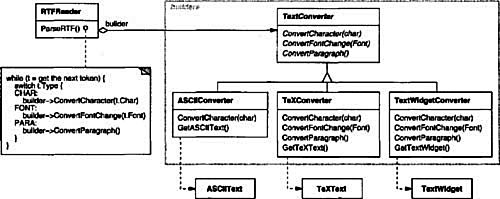
Each kind of converter class takes the mechanism for creating and assembling a complex object and puts it behind an abstract interface. The converter is separate from the reader, which is responsible for parsing an RTF document.
The Builder pattern captures all these relationships. Each converter class is called a builder in the pattern, and the reader is called the director. Applied to this example, the Builder pattern separates the algorithm for interpreting a textual format (that is, the parser for RTF documents) from how a converted format gets created and represented. This lets us reuse the RTFReader’s parsing algorithm to create different text representations from RTF documents—just configure the RTFReader with different subclasses of TextConverter.
Use the Builder pattern when
• the algorithm for creating a complex object should be independent of the parts that make up the object and how they’re assembled.
• the construction process must allow different representations for the object that’s constructed.
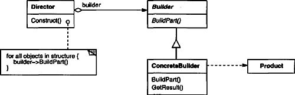
• Builder (TextConverter)
– specifies an abstract interface for creating parts of a Product object.
• ConcreteBuilder (ASCIIConverter, TeXConverter, TextWidgetConverter)
– constructs and assembles parts of the product by implementing the Builder interface.
– defines and keeps track of the representation it creates.
– provides an interface for retrieving the product (e.g., GetASCIIText, Get-Text Widget).
• Director (RTFReader)
– constructs an object using the Builder interface.
• Product (ASCIIText, TeXText, TextWidget)
– represents the complex object under construction. ConcreteBuilder builds the product’s internal representation and defines the process by which it’s assembled.
– includes classes that define the constituent parts, including interfaces for assembling the parts into the final result.
• The client creates the Director object and configures it with the desired Builder object.
• Director notifies the builder whenever a part of the product should be built.
• Builder handles requests from the director and adds parts to the product.
• The client retrieves the product from the builder.
The following interaction diagram illustrates how Builder and Director cooperate with a client.
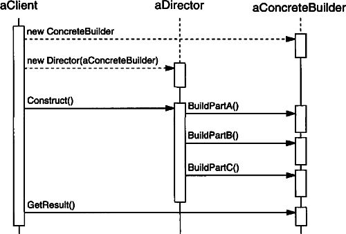
Here are key consequences of the Builder pattern:
1. It lets you vary a product’s internal representation. The Builder object provides the director with an abstract interface for constructing the product. The interface lets the builder hide the representation and internal structure of the product. It also hides how the product gets assembled. Because the product is constructed through an abstract interface, all you have to do to change the product’s internal representation is define a new kind of builder.
2. It isolates code for construction and representation. The Builder pattern improves modularity by encapsulating the way a complex object is constructed and represented. Clients needn’t know anything about the classes that define the product’s internal structure; such classes don’t appear in Builder’s interface.
Each ConcreteBuilder contains all the code to create and assemble a particular kind of product. The code is written once; then different Directors can reuse it to build Product variants from the same set of parts. In the earlier RTF example, we could define a reader for a format other than RTF, say, an SGMLReader, and use the same TextConverters to generate ASCIIText, TeXText, and TextWidget renditions of SGML documents.
3. It gives you finer control over the construction process. Unlike creational patterns that construct products in one shot, the Builder pattern constructs the product step by step under the director’s control. Only when the product is finished does the director retrieve it from the builder. Hence the Builder interface reflects the process of constructing the product more than other creational patterns. This gives you finer control over the construction process and consequently the internal structure of the resulting product.
Typically there’s an abstract Builder class that defines an operation for each component that a director may ask it to create. The operations do nothing by default. A ConcreteBuilder class overrides operations for components it’s interested in creating.
Here are other implementation issues to consider:
1. Assembly and construction interface. Builders construct their products in step-by-step fashion. Therefore the Builder class interface must be general enough to allow the construction of products for all kinds of concrete builders.
A key design issue concerns the model for the construction and assembly process. A model where the results of construction requests are simply appended to the product is usually sufficient. In the RTF example, the builder converts and appends the next token to the text it has converted so far.
But sometimes you might need access to parts of the product constructed earlier. In the Maze example we present in the Sample Code, the MazeBuilder interface lets you add a door between existing rooms. Tree structures such as parse trees that are built bottom-up are another example. In that case, the builder would return child nodes to the director, which then would pass them back to the builder to build the parent nodes.
2. Why no abstract class for products? In the common case, the products produced by the concrete builders differ so greatly in their representation that there is little to gain from giving different products a common parent class. In the RTF example, the ASCIIText and the TextWidget objects are unlikely to have a common interface, nor do they need one. Because the client usually configures the director with the proper concrete builder, the client is in a position to know which concrete subclass of Builder is in use and can handle its products accordingly.
3. Empty methods as default in Builder. In C++, the build methods are intentionally not declared pure virtual member functions. They’re defined as empty methods instead, letting clients override only the operations they’re interested in.
We’ll define a variant of the CreateMaze member function (page 84) that takes a builder of class MazeBuilder as an argument.
The MazeBuilder class defines the following interface for building mazes:
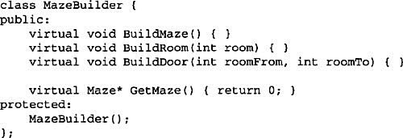
This interface can create three things: (1) the maze, (2) rooms with a particular room number, and (3) doors between numbered rooms. The GetMaze operation returns the maze to the client. Subclasses of MazeBuilder will override this operation to return the maze that they build.
All the maze-building operations of MazeBuilder do nothing by default. They’re not declared pure virtual to let derived classes override only those methods in which they’re interested.
Given the MazeBuilder interface, we can change the CreateMaze member function to take this builder as a parameter.
Compare this version of CreateMaze with the original. Notice how the builder hides the internal representation of the Maze—that is, the classes that define rooms, doors, and walls—and how these parts are assembled to complete the final maze. Someone might guess that there are classes for representing rooms and doors, but there is no hint of one for walls. This makes it easier to change the way a maze is represented, since none of the clients of MazeBuilder has to be changed.
Like the other creational patterns, the Builder pattern encapsulates how objects get created, in this case through the interface defined by MazeBuilder. That means we can reuse MazeBuilder to build different kinds of mazes. The CreateComplexMaze operation gives an example:
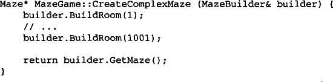
Note that MazeBuilder does not create mazes itself; its main purpose is just to define an interface for creating mazes. It defines empty implementations primarily for convenience. Subclasses of MazeBuilder do the actual work.
The subclass StandardMazeBuilder is an implementation that builds simple mazes. It keeps track of the maze it’s building in the variable _currentMaze.
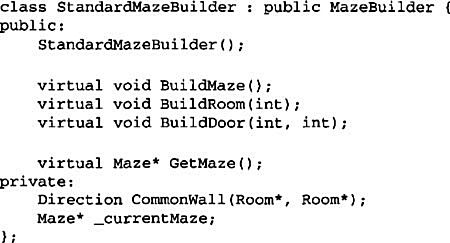
CommonWall is a utility operation that determines the direction of the common wall between two rooms.
The StandardMazeBuilder constructor simply initializes _currentMaze.
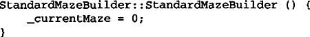
BuildMaze instantiates a Maze that other operations will assemble and eventually return to the client (with GetMaze).
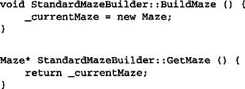
The BuildRoom operation creates a room and builds the walls around it:
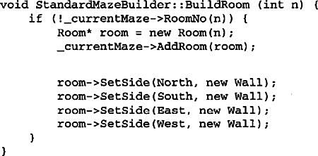
To build a door between two rooms, StandardMazeBuilder looks up both rooms in the maze and finds their adjoining wall:
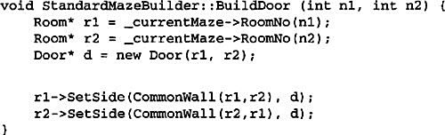
Clients can now use CreateMaze in conjunction with StandardMazeBuilder to create a maze:
We could have put all the StandardMazeBuilder operations in Maze and let each Maze build itself. But making Maze smaller makes it easier to understand and modify, and StandardMazeBuilder is easy to separate from Maze. Most importantly, separating the two lets you have a variety of MazeBuilders, each using different classes for rooms, walls, and doors.
A more exotic MazeBuilder is CountingMazeBuilder. This builder doesn’t create a maze at all; it just counts the different kinds of components that would have been created.
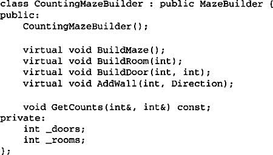
The constructor initializes the counters, and the overridden MazeBuilder operations increment them accordingly.
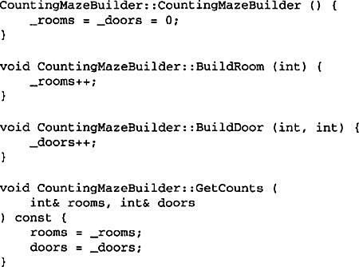
Here’s how a client might use a CountingMazeBuilder:
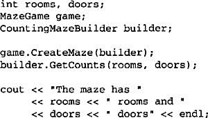
The RTF converter application is from ET++ [WGM88]. Its text building block uses a builder to process text stored in the RTF format.
Builder is a common pattern in Smalltalk-80 [Par90]:
• The Parser class in the compiler subsystem is a Director that takes a ProgramNodeBuilder object as an argument. A Parser object notifies its ProgramNodeBuilder object each time it recognizes a syntactic construct. When the parser is done, it asks the builder for the parse tree it built and returns it to the client.
• ClassBuilder is a builder that Classes use to create subclasses for themselves. In this case a Class is both the Director and the Product.
• ByteCodeStream is a builder that creates a compiled method as a byte array. ByteCodeStream is a nonstandard use of the Builder pattern, because the complex object it builds is encoded as a byte array, not as a normal Smalltalk object. But the interface to ByteCodeStream is typical of a builder, and it would be easy to replace ByteCodeStream with a different class that represented programs as a composite object.
The Service Configurator framework from the Adaptive Communications Environment uses a builder to construct network service components that are linked into a server at run-time [SS94]. The components are described with a configuration language that’s parsed by an LALR(l) parser. The semantic actions of the parser perform operations on the builder that add information to the service component. In this case, the parser is the Director.
Abstract Factory (87) is similar to Builder in that it too may construct complex objects. The primary difference is that the Builder pattern focuses on constructing a complex object step by step. Abstract Factory’s emphasis is on families of product objects (either simple or complex). Builder returns the product as a final step, but as far as the Abstract Factory pattern is concerned, the product gets returned immediately.
A Composite (163) is what the builder often builds.
Define an interface for creating an object, but let subclasses decide which class to instantiate. Factory Method lets a class defer instantiation to subclasses.
Virtual Constructor
Frameworks use abstract classes to define and maintain relationships between objects. A framework is often responsible for creating these objects as well.
Consider a framework for applications that can present multiple documents to the user. Two key abstractions in this framework are the classes Application and Document. Both classes are abstract, and clients have to subclass them to realize their application-specific implementations. To create a drawing application, for example, we define the classes DrawingApplication and DrawingDocument. The Application class is responsible for managing Documents and will create them as required—when the user selects Open or New from a menu, for example.
Because the particular Document subclass to instantiate is application-specific, the Application class can’t predict the subclass of Document to instantiate—the Application class only knows when a new document should be created, not what kind of Document to create. This creates a dilemma: The framework must instantiate classes, but it only knows about abstract classes, which it cannot instantiate.
The Factory Method pattern offers a solution. It encapsulates the knowledge of which Document subclass to create and moves this knowledge out of the framework.
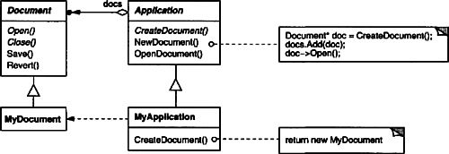
Application subclasses redefine an abstract CreateDocument operation on Application to return the appropriate Document subclass. Once an Application subclass is instantiated, it can then instantiate application-specific Documents without knowing their class. We call CreateDocument a factory method because it’s responsible for “manufacturing” an object.
Use the Factory Method pattern when
• a class can’t anticipate the class of objects it must create.
• a class wants its subclasses to specify the objects it creates.
• classes delegate responsibility to one of several helper subclasses, and you want to localize the knowledge of which helper subclass is the delegate.

• Product (Document)
– defines the interface of objects the factory method creates.
• ConcreteProduct (MyDocument)
– implements the Product interface.
• Creator (Application)
– declares the factory method, which returns an object of type Product. Creator may also define a default implementation of the factory method that returns a default ConcreteProduct object.
– may call the factory method to create a Product object.
• ConcreteCreator (MyApplication)
– overrides the factory method to return an instance of a ConcreteProduct.
• Creator relies on its subclasses to define the factory method so that it returns an instance of the appropriate ConcreteProduct.
Factory methods eliminate the need to bind application-specific classes into your code. The code only deals with the Product interface; therefore it can work with any user-defined ConcreteProduct classes.
A potential disadvantage of factory methods is that clients might have to subclass the Creator class just to create a particular ConcreteProduct object. Subclassing is fine when the client has to subclass the Creator class anyway, but otherwise the client now must deal with another point of evolution.
Here are two additional consequences of the Factory Method pattern:
1. Provides hooks for subclasses. Creating objects inside a class with a factory method is always more flexible than creating an object directly. Factory Method gives subclasses a hook for providing an extended version of an object.
In the Document example, the Document class could define a factory method called CreateFileDialog that creates a default file dialog object for opening an existing document. A Document subclass can define an application-specific file dialog by overriding this factory method. In this case the factory method is not abstract but provides a reasonable default implementation.
2. Connects parallel class hierarchies. In the examples we’ve considered so far, the factory method is only called by Creators. But this doesn’t have to be the case; clients can find factory methods useful, especially in the case of parallel class hierarchies.
Parallel class hierarchies result when a class delegates some of its responsibilities to a separate class. Consider graphical figures that can be manipulated interactively; that is, they can be stretched, moved, or rotated using the mouse. Implementing such interactions isn’t always easy. It often requires storing and updating information that records the state of the manipulation at a given time. This state is needed only during manipulation; therefore it needn’t be kept in the figure object. Moreover, different figures behave differently when the user manipulates them. For example, stretching a line figure might have the effect of moving an endpoint, whereas stretching a text figure may change its line spacing.
With these constraints, it’s better to use a separate Manipulator object that implements the interaction and keeps track of any manipulation-specific state that’s needed. Different figures will use different Manipulator subclasses to handle particular interactions. The resulting Manipulator class hierarchy parallels (at least partially) the Figure class hierarchy:
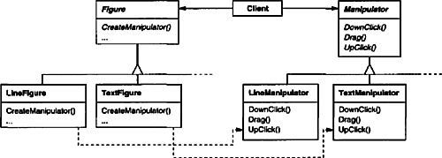
The Figure class provides a CreateManipulator factory method that lets clients create a Figure’s corresponding Manipulator. Figure subclasses override this method to return an instance of the Manipulator subclass that’s right for them. Alternatively, the Figure class may implement CreateManipulator to return a default Manipulator instance, and Figure subclasses may simply inherit that default. The Figure classes that do so need no corresponding Manipulator subclass—hence the hierarchies are only partially parallel.
Notice how the factory method defines the connection between the two class hierarchies. It localizes knowledge of which classes belong together.
Consider the following issues when applying the Factory Method pattern:
1. Two major varieties. The two main variations of the Factory Method pattern are (1) the case when the Creator class is an abstract class and does not provide an implementation for the factory method it declares, and (2) the case when the Creator is a concrete class and provides a default implementation for the factory method. It’s also possible to have an abstract class that defines a default implementation, but this is less common.
The first case requires subclasses to define an implementation, because there’s no reasonable default. It gets around the dilemma of having to instantiate unforeseeable classes. In the second case, the concrete Creator uses the factory method primarily for flexibility. It’s following a rule that says, “Create objects in a separate operation so that subclasses can override the way they’re created.” This rule ensures that designers of subclasses can change the class of objects their parent class instantiates if necessary.
2. Parameterized factory methods. Another variation on the pattern lets the factory method create multiple kinds of products. The factory method takes a parameter that identifies the kind of object to create. All objects the factory method creates will share the Product interface. In the Document example, Application might support different kinds of Documents. You pass Create-Document an extra parameter to specify the kind of document to create.
The Unidraw graphical editing framework [VL90] uses this approach for reconstructing objects saved on disk. Unidraw defines a Creator class with a factory method Create that takes a class identifier as an argument. The class identifier specifies the class to instantiate. When Unidraw saves an object to disk, it writes out the class identifier first and then its instance variables. When it reconstructs the object from disk, it reads the class identifier first.
Once the class identifier is read, the framework calls Create, passing the identifier as the parameter. Create looks up the constructor for the corresponding class and uses it to instantiate the object. Last, Create calls the object’s Read operation, which reads the remaining information on the disk and initializes the object’s instance variables.
A parameterized factory method has the following general form, where MyProduct and YourProduct are subclasses of Product:
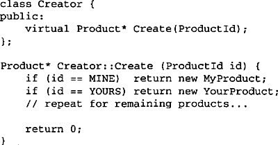
Overriding a parameterized factory method lets you easily and selectively extend or change the products that a Creator produces. You can introduce new identifiers for new kinds of products, or you can associate existing identifiers with different products.
For example, a subclass MyCreator could swap MyProduct and YourProduct and support a new TheirProduct subclass:
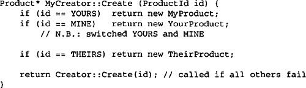
Notice that the last thing this operation does is call Create on the parent class. That’s because MyCreator::Create handles only YOURS, MINE, and THEIRS differently than the parent class. It isn’t interested in other classes. Hence MyCreator extends the kinds of products created, and it defers responsibility for creating all but a few products to its parent.
3. Language-specific variants and issues. Different languages lend themselves to other interesting variations and caveats.
Smalltalk programs often use a method that returns the class of the object to be instantiated. A Creator factory method can use this value to create a product, and a ConcreteCreator may store or even compute this value. The result is an even later binding for the type of ConcreteProduct to be instantiated.
A Smalltalk version of the Document example can define a documentClass method on Application. The documentClass method returns the proper Document class for instantiating documents. The implementation of documentClass in MyApplication returns the MyDocument class. Thus in class Application we have
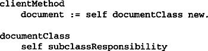
In class MyApplication we have
documentClass
^ MyDocument
which returns the class MyDocument to be instantiated to Application.
An even more flexible approach akin to parameterized factory methods is to store the class to be created as a class variable of Application. That way you don’t have to subclass Application to vary the product.
Factory methods in C++ are always virtual functions and are often pure virtual. Just be careful not to call factory methods in the Creator’s constructor—the factory method in the ConcreteCreator won’t be available yet.
You can avoid this by being careful to access products solely through accessor operations that create the product on demand. Instead of creating the concrete product in the constructor, the constructor merely initializes it to 0. The accessor returns the product. But first it checks to make sure the product exists, and if it doesn’t, the accessor creates it. This technique is sometimes called lazy initialization. The following code shows a typical implementation:
4. Using templates to avoid subclassing. As we’ve mentioned, another potential problem with factory methods is that they might force you to subclass just to create the appropriate Product objects. Another way to get around this in C++ is to provide a template subclass of Creator that’s parameterized by the Product class:
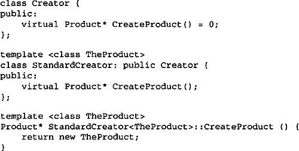
With this template, the client supplies just the product class—no subclassing of Creator is required.
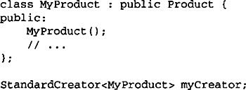
5. Naming conventions. It’s good practice to use naming conventions that make it clear you’re using factory methods. For example, the MacApp Macintosh application framework [App89] always declares the abstract operation that defines the factory method as Class* DoMakeClass(), where Class is the Product class.
The function CreateMaze (page 84) builds and returns a maze. One problem with this function is that it hard-codes the classes of maze, rooms, doors, and walls. We’ll introduce factory methods to let subclasses choose these components.
First we’ll define factory methods in MazeGame for creating the maze, room, wall, and door objects:
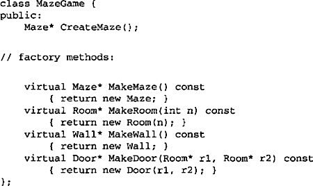
Each factory method returns a maze component of a given type. MazeGame provides default implementations that return the simplest kinds of maze, rooms, walls, and doors.
Now we can rewrite CreateMaze to use these factory methods:
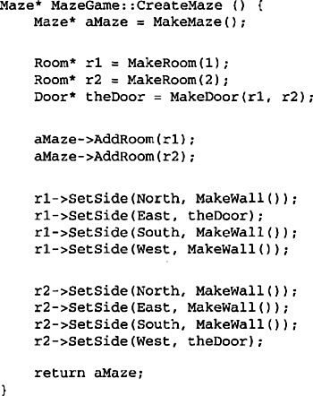
Different games can subclass MazeGame to specialize parts of the maze. MazeGame subclasses can redefine some or all of the factory methods to specify variations in products. For example, a BombedMazeGame can redefine the Room and Wall products to return the bombed varieties:
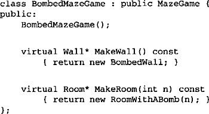
An EnchantedMazeGame variant might be defined like this:
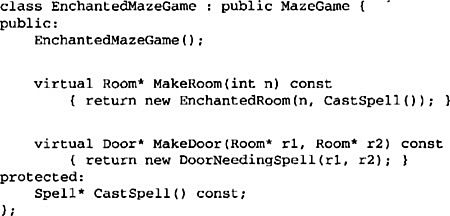
Factory methods pervade toolkits and frameworks. The preceding document example is a typical use in MacApp and ET++ [WGM88]. The manipulator example is from Unidraw.
Class View in the Smalltalk-80 Model/View/Controller framework has a method defaultController that creates a controller, and this might appear to be a factory method [Par90]. But subclasses of View specify the class of their default controller by defining defaultControllerClass, which returns the class from which default-Controller creates instances. So defaultControllerClass is the real factory method, that is, the method that subclasses should override.
A more esoteric example in Smalltalk-80 is the factory method parserClass defined by Behavior (a superclass of all objects representing classes). This enables a class to use a customized parser for its source code. For example, a client can define a class SQLParser to analyze the source code of a class with embedded SQL statements. The Behavior class implements parserClass to return the standard Smalltalk Parser class. A class that includes embedded SQL statements overrides this method (as a class method) and returns the SQLParser class.
The Orbix ORB system from IONA Technologies [ION94] uses Factory Method to generate an appropriate type of proxy (see Proxy (207)) when an object requests a reference to a remote object. Factory Method makes it easy to replace the default proxy with one that uses client-side caching, for example.
Abstract Factory (87) is often implemented with factory methods. The Motivation example in the Abstract Factory pattern illustrates Factory Method as well.
Factory methods are usually called within Template Methods (325). In the document example above, NewDocument is a template method.
Prototypes (117) don’t require subclassing Creator. However, they often require an Initialize operation on the Product class. Creator uses Initialize to initialize the object. Factory Method doesn’t require such an operation.
Specify the kinds of objects to create using a prototypical instance, and create new objects by copying this prototype.
You could build an editor for music scores by customizing a general framework for graphical editors and adding new objects that represent notes, rests, and staves. The editor framework may have a palette of tools for adding these music objects to the score. The palette would also include tools for selecting, moving, and otherwise manipulating music objects. Users will click on the quarter-note tool and use it to add quarter notes to the score. Or they can use the move tool to move a note up or down on the staff, thereby changing its pitch.
Let’s assume the framework provides an abstract Graphic class for graphical components, like notes and staves. Moreover, it’ll provide an abstract Tool class for defining tools like those in the palette. The framework also predefines a GraphicTool subclass for tools that create instances of graphical objects and add them to the document.
But GraphicTool presents a problem to the framework designer. The classes for notes and staves are specific to our application, but the GraphicTool class belongs to the framework. GraphicTool doesn’t know how to create instances of our music classes to add to the score. We could subclass GraphicTool for each kind of music object, but that would produce lots of subclasses that differ only in the kind of music object they instantiate. We know object composition is a flexible alternative to subclassing. The question is, how can the framework use it to parameterize instances of GraphicTool by the class of Graphic they’re supposed to create?
The solution lies in making GraphicTool create a new Graphic by copying or “cloning” an instance of a Graphic subclass. We call this instance a prototype. GraphicTool is parameterized by the prototype it should clone and add to the document. If all Graphic subclasses support a Clone operation, then the GraphicTool can clone any kind of Graphic.
So in our music editor, each tool for creating a music object is an instance of GraphicTool that’s initialized with a different prototype. Each GraphicTool instance will produce a music object by cloning its prototype and adding the clone to the score.
We can use the Prototype pattern to reduce the number of classes even further. We have separate classes for whole notes and half notes, but that’s probably unnecessary. Instead they could be instances of the same class initialized with different bitmaps and durations. A tool for creating whole notes becomes just a GraphicTool whose prototype is a MusicalNote initialized to be a whole note. This can reduce the number of classes in the system dramatically. It also makes it easier to add a new kind of note to the music editor.
Use the Prototype pattern when a system should be independent of how its products are created, composed, and represented; and
• when the classes to instantiate are specified at run-time, for example, by dynamic loading; or
• to avoid building a class hierarchy of factories that parallels the class hierarchy of products; or
• when instances of a class can have one of only a few different combinations of state. It may be more convenient to install a corresponding number of prototypes and clone them rather than instantiating the class manually, each time with the appropriate state.

• Prototype (Graphic)
– declares an interface for cloning itself.
• ConcretePrototype (Staff, WholeNote, HalfNote)
– implements an operation for cloning itself.
• Client (GraphicTool)
– creates a new object by asking a prototype to clone itself.
• A client asks a prototype to clone itself.
Prototype has many of the same consequences that Abstract Factory (87) and Builder (97) have: It hides the concrete product classes from the client, thereby reducing the number of names clients know about. Moreover, these patterns let a client work with application-specific classes without modification.
Additional benefits of the Prototype pattern are listed below.
1. Adding and removing products at run-time. Prototypes let you incorporate a new concrete product class into a system simply by registering a prototypical instance with the client. That’s a bit more flexible than other creational patterns, because a client can install and remove prototypes at run-time.
2. Specifying new objects by varying values. Highly dynamic systems let you define new behavior through object composition—by specifying values for an object’s variables, for example—and not by defining new classes. You effectively define new kinds of objects by instantiating existing classes and registering the instances as prototypes of client objects. A client can exhibit new behavior by delegating responsibility to the prototype.
This kind of design lets users define new “classes” without programming. In fact, cloning a prototype is similar to instantiating a class. The Prototype pattern can greatly reduce the number of classes a system needs. In our music editor, one GraphicTool class can create a limitless variety of music objects.
3. Specifying new objects by varying structure. Many applications build objects from parts and subparts. Editors for circuit design, for example, build circuits out of subcircuits.1 For convenience, such applications often let you instantiate complex, user-defined structures, say, to use a specific subcircuit again and again.
The Prototype pattern supports this as well. We simply add this subcircuit as a prototype to the palette of available circuit elements. As long as the composite circuit object implements Clone as a deep copy, circuits with different structures can be prototypes.
4. Reduced subclassing. Factory Method (107) often produces a hierarchy of Creator classes that parallels the product class hierarchy. The Prototype pattern lets you clone a prototype instead of asking a factory method to make a new object. Hence you don’t need a Creator class hierarchy at all. This benefit applies primarily to languages like C++ that don’t treat classes as first-class objects. Languages that do, like Smalltalk and Objective C, derive less benefit, since you can always use a class object as a creator. Class objects already act like prototypes in these languages.
5. Configuring an application with classes dynamically. Some run-time environments let you load classes into an application dynamically. The Prototype pattern is the key to exploiting such facilities in a language like C++.
An application that wants to create instances of a dynamically loaded class won’t be able to reference its constructor statically. Instead, the run-time environment creates an instance of each class automatically when it’s loaded, and it registers the instance with a prototype manager (see the Implementation section). Then the application can ask the prototype manager for instances of newly loaded classes, classes that weren’t linked with the program originally. The ET++ application framework [WGM88] has a run-time system that uses this scheme.
The main liability of the Prototype pattern is that each subclass of Prototype must implement the Clone operation, which may be difficult. For example, adding Clone is difficult when the classes under consideration already exist. Implementing Clone can be difficult when their internals include objects that don’t support copying or have circular references.
Prototype is particularly useful with static languages like C++, where classes are not objects, and little or no type information is available at run-time. It’s less important in languages like Smalltalk or Objective C that provide what amounts to a prototype (i.e., a class object) for creating instances of each class. This pattern is built into prototype-based languages like Self [US87], in which all object creation happens by cloning a prototype.
Consider the following issues when implementing prototypes:
1. Using a prototype manager. When the number of prototypes in a system isn’t fixed (that is, they can be created and destroyed dynamically), keep a registry of available prototypes. Clients won’t manage prototypes themselves but will store and retrieve them from the registry. A client will ask the registry for a prototype before cloning it. We call this registry a prototype manager.
A prototype manager is an associative store that returns the prototype matching a given key. It has operations for registering a prototype under a key and for unregistering it. Clients can change or even browse through the registry at run-time. This lets clients extend and take inventory on the system without writing code.
2. Implementing the Clone operation. The hardest part of the Prototype pattern is implementing the Clone operation correctly. It’s particularly tricky when object structures contain circular references.
Most languages provide some support for cloning objects. For example, Smalltalk provides an implementation of copy that’s inherited by all subclasses of Object. C++ provides a copy constructor. But these facilities don’t solve the “shallow copy versus deep copy” problem [GR83]. That is, does cloning an object in turn clone its instance variables, or do the clone and original just share the variables?
A shallow copy is simple and often sufficient, and that’s what Smalltalk provides by default. The default copy constructor in C++ does a memberwise copy, which means pointers will be shared between the copy and the original. But cloning prototypes with complex structures usually requires a deep copy, because the clone and the original must be independent. Therefore you must ensure that the clone’s components are clones of the prototype’s components. Cloning forces you to decide what if anything will be shared.
If objects in the system provide Save and Load operations, then you can use them to provide a default implementation of Clone simply by saving the object and loading it back immediately. The Save operation saves the object into a memory buffer, and Load creates a duplicate by reconstructing the object from the buffer.
3. Initializing clones. While some clients are perfectly happy with the clone as is, others will want to initialize some or all of its internal state to values of their choosing. You generally can’t pass these values in the Clone operation, because their number will vary between classes of prototypes. Some prototypes might need multiple initialization parameters; others won’t need any. Passing parameters in the Clone operation precludes a uniform cloning interface.
It might be the case that your prototype classes already define operations for (re)setting key pieces of state. If so, clients may use these operations immediately after cloning. If not, then you may have to introduce an Initialize operation (see the Sample Code section) that takes initialization parameters as arguments and sets the clone’s internal state accordingly. Beware of deep-copying Clone operations—the copies may have to be deleted (either explicitly or within Initialize) before you reinitialize them.
We’ll define a MazePrototypeFactory subclass of the MazeFactory class (page 92). MazePrototypeFactory will be initialized with prototypes of the objects it will create so that we don’t have to subclass it just to change the classes of walls or rooms it creates.
MazePrototypeFactory augments the MazeFactory interface with a constructor that takes the prototypes as arguments:
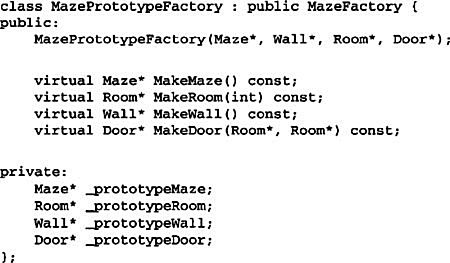
The new constructor simply initializes its prototypes:
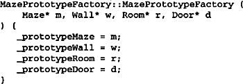
The member functions for creating walls, rooms, and doors are similar: Each clones a prototype and then initializes it. Here are the definitions of MakeWall and MakeDoor:
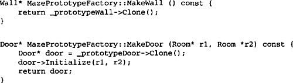
We can use MazePrototypeFactory to create a prototypical or default maze just by initializing it with prototypes of basic maze components:
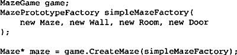
To change the type of maze, we initialize MazePrototypeFactory with a different set of prototypes. The following call creates a maze with a BombedDoor and a RoomWithABomb:
An object that can be used as a prototype, such as an instance of Wall, must support the Clone operation. It must also have a copy constructor for cloning. It may also need a separate operation for reinitializing internal state. We’ll add the Initialize operation to Door to let clients initialize the clone’s rooms.
Compare the following definition of Door to the one on page 83:

The BombedWall subclass must override Clone and implement a corresponding copy constructor.
Although BombedWall::Clone returns a Wall*, its implementation returns a pointer to a new instance of a subclass, that is, a BombedWall*. We define Clone like this in the base class to ensure that clients that clone the prototype don’t have to know about their concrete subclasses. Clients should never need to downcast the return value of Clone to the desired type.
In Smalltalk, you can reuse the standard copy method inherited from Object to clone any MapSite. You can use MazeFactory to produce the prototypes you’ll need; for example, you can create a room by supplying the name #room. The MazeFactory has a dictionary that maps names to prototypes. Its make: method looks like this:
Given appropriate methods for initializing the MazeFactory with prototypes, you could create a simple maze with the following code:
where the definition of the on: class method for CreateMaze would be
Perhaps the first example of the Prototype pattern was in Ivan Sutherland’s Sketchpad system [Sut63]. The first widely known application of the pattern in an object-oriented language was in ThingLab, where users could form a composite object and then promote it to a prototype by installing it in a library of reusable objects [Bor81]. Goldberg and Robson mention prototypes as a pattern [GR83], but Coplien [Cop92] gives a much more complete description. He describes idioms related to the Prototype pattern for C++ and gives many examples and variations.
Etgdb is a debugger front-end based on ET++ that provides a point-and-click interface to different line-oriented debuggers. Each debugger has a corresponding DebuggerAdaptor subclass. For example, Gdb Adaptor adapts etgdb to the command syntax of GNU gdb, while SunDbxAdaptor adapts etgdb to Sun’s dbx debugger. Etgdb does not have a set of DebuggerAdaptor classes hard-coded into it. Instead, it reads the name of the adaptor to use from an environment variable, looks for a prototype with the specified name in a global table, and then clones the prototype. New debuggers can be added to etgdb by linking it with the DebuggerAdaptor that works for that debugger.
The “interaction technique library” in Mode Composer stores prototypes of objects that support various interaction techniques [Sha90]. Any interaction technique created by the Mode Composer can be used as a prototype by placing it in this library. The Prototype pattern lets Mode Composer support an unlimited set of interaction techniques.
The music editor example discussed earlier is based on the Unidraw drawing framework [VL90].
Prototype and Abstract Factory (87) are competing patterns in some ways, as we discuss at the end of this chapter. They can also be used together, however. An Abstract Factory might store a set of prototypes from which to clone and return product objects.
Designs that make heavy use of the Composite (163) and Decorator (175) patterns often can benefit from Prototype as well.
Ensure a class only has one instance, and provide a global point of access to it.
It’s important for some classes to have exactly one instance. Although there can be many printers in a system, there should be only one printer spooler. There should be only one file system and one window manager. A digital filter will have one A/D converter. An accounting system will be dedicated to serving one company.
How do we ensure that a class has only one instance and that the instance is easily accessible? A global variable makes an object accessible, but it doesn’t keep you from instantiating multiple objects.
A better solution is to make the class itself responsible for keeping track of its sole instance. The class can ensure that no other instance can be created (by intercepting requests to create new objects), and it can provide a way to access the instance. This is the Singleton pattern.
Use the Singleton pattern when
• there must be exactly one instance of a class, and it must be accessible to clients from a well-known access point.
• when the sole instance should be extensible by subclassing, and clients should be able to use an extended instance without modifying their code.
• Singleton
– defines an Instance operation that lets clients access its unique instance. Instance is a class operation (that is, a class method in Smalltalk and a static member function in C++).
– may be responsible for creating its own unique instance.
• Clients access a Singleton instance solely through Singleton’s Instance operation.
The Singleton pattern has several benefits:
1. Controlled access to sole instance. Because the Singleton class encapsulates its sole instance, it can have strict control over how and when clients access it.
2. Reduced name space. The Singleton pattern is an improvement over global variables. It avoids polluting the name space with global variables that store sole instances.
3. Permits refinement of operations and representation. The Singleton class may be subclassed, and it’s easy to configure an application with an instance of this extended class. You can configure the application with an instance of the class you need at run-time.
4. Permits a variable number of instances. The pattern makes it easy to change your mind and allow more than one instance of the Singleton class. Moreover, you can use the same approach to control the number of instances that the application uses. Only the operation that grants access to the Singleton instance needs to change.
5. More flexible than class operations. Another way to package a singleton’s functionality is to use class operations (that is, static member functions in C++ or class methods in Smalltalk). But both of these language techniques make it hard to change a design to allow more than one instance of a class. Moreover, static member functions in C++ are never virtual, so subclasses can’t override them polymorphically.
Here are implementation issues to consider when using the Singleton pattern:
1. Ensuring a unique instance. The Singleton pattern makes the sole instance a normal instance of a class, but that class is written so that only one instance can ever be created. A common way to do this is to hide the operation that creates the instance behind a class operation (that is, either a static member function or a class method) that guarantees only one instance is created. This operation has access to the variable that holds the unique instance, and it ensures the variable is initialized with the unique instance before returning its value. This approach ensures that a singleton is created and initialized before its first use.
You can define the class operation in C++ with a static member function Instance of the Singleton class. Singleton also defines a static member variable _instance that contains a pointer to its unique instance.
The Singleton class is declared as
The corresponding implementation is
Clients access the singleton exclusively through the Instance member function. The variable _instance is initialized to 0, and the static member function Instance returns its value, initializing it with the unique instance if it is 0. Instance uses lazy initialization; the value it returns isn’t created and stored until it’s first accessed.
Notice that the constructor is protected. A client that tries to instantiate Singleton directly will get an error at compile-time. This ensures that only one instance can ever get created.
Moreover, since the _instance is a pointer to a Singleton object, the Instance member function can assign a pointer to a subclass of Singleton to this variable. We’ll give an example of this in the Sample Code.
There’s another thing to note about the C++ implementation. It isn’t enough to define the singleton as a global or static object and then rely on automatic initialization. There are three reasons for this:
(a) We can’t guarantee that only one instance of a static object will ever be declared.
(b) We might not have enough information to instantiate every singleton at static initialization time. A singleton might require values that are computed later in the program’s execution.
(c) C++ doesn’t define the order in which constructors for global objects are called across translation units [ES90]. This means that no dependencies can exist between singletons; if any do, then errors are inevitable.
An added (albeit small) liability of the global/static object approach is that it forces all singletons to be created whether they are used or not. Using a static member function avoids all of these problems.
In Smalltalk, the function that returns the unique instance is implemented as a class method on the Singleton class. To ensure that only one instance is created, override the new operation. The resulting Singleton class might have the following two class methods, where Solelnstance is a class variable that is not used anywhere else:
2. Subclassing the Singleton class. The main issue is not so much defining the subclass but installing its unique instance so that clients will be able to use it. In essence, the variable that refers to the singleton instance must get initialized with an instance of the subclass. The simplest technique is to determine which singleton you want to use in the Singleton’s Instance operation. An example in the Sample Code shows how to implement this technique with environment variables.
Another way to choose the subclass of Singleton is to take the implementation of Instance out of the parent class (e.g., MazeFactory) and put it in the subclass. That lets a C++ programmer decide the class of singleton at link-time (e.g., by linking in an object file containing a different implementation) but keeps it hidden from the clients of the singleton.
The link approach fixes the choice of singleton class at link-time, which makes it hard to choose the singleton class at run-time. Using conditional statements to determine the subclass is more flexible, but it hard-wires the set of possible Singleton classes. Neither approach is flexible enough in all cases.
A more flexible approach uses a registry of singletons. Instead of having Instance define the set of possible Singleton classes, the Singleton classes can register their singleton instance by name in a well-known registry.
The registry maps between string names and singletons. When Instance needs a singleton, it consults the registry, asking for the singleton by name. The registry looks up the corresponding singleton (if it exists) and returns it. This approach frees Instance from knowing all possible Singleton classes or instances. All it requires is a common interface for all Singleton classes that includes operations for the registry:
Register registers the Singleton instance under the given name. To keep the registry simple, we’ll have it store a list of NameSingletonPair objects. Each NameSingletonPair maps a name to a singleton. The Lookup operation finds a singleton given its name. We’ll assume that an environment variable specifies the name of the singleton desired.
Where do Singleton classes register themselves? One possibility is in their constructor. For example, a MySingleton subclass could do the following:
Of course, the constructor won’t get called unless someone instantiates the class, which echoes the problem the Singleton pattern is trying to solve! We can get around this problem in C++ by defining a static instance of MySingleton. For example, we can define
static MySingleton theSingleton;
in the file that contains MySingleton’s implementation.
No longer is the Singleton class responsible for creating the singleton. Instead, its primary responsibility is to make the singleton object of choice accessible in the system. The static object approach still has a potential drawback—namely that instances of all possible Singleton subclasses must be created, or else they won’t get registered.
Suppose we define a MazeFactory class for building mazes as described on page 92. MazeFactory defines an interface for building different parts of a maze. Subclasses can redefine the operations to return instances of specialized product classes, like BombedWall objects instead of plain Wall objects.
What’s relevant here is that the Maze application needs only one instance of a maze factory, and that instance should be available to code that builds any part of the maze. This is where the Singleton pattern comes in. By making the MazeFactory a singleton, we make the maze object globally accessible without resorting to global variables.
For simplicity, let’s assume we’ll never subclass MazeFactory. (We’ll consider the alternative in a moment.) We make it a Singleton class in C++ by adding a static Instance operation and a static _instance member to hold the one and only instance. We must also protect the constructor to prevent accidental instantiation, which might lead to more than one instance.
The corresponding implementation is
Now let’s consider what happens when there are subclasses of MazeFactory, and the application must decide which one to use. We’ll select the kind of maze through an environment variable and add code that instantiates the proper MazeFactory subclass based on the environment variable’s value. The Instance operation is a good place to put this code, because it already instantiates MazeFactory:
Note that Instance must be modified whenever you define a new subclass of MazeFactory. That might not be a problem in this application, but it might be for abstract factories defined in a framework.
A possible solution would be to use the registry approach described in the Implementation section. Dynamic linking could be useful here as well—it would keep the application from having to load all the subclasses that are not used.
An example of the Singleton pattern in Smalltalk-80 [Par90] is the set of changes to the code, which is ChangeSet current. A more subtle example is the relationship between classes and their metaclasses. A metaclass is the class of a class, and each metaclass has one instance. Metaclasses do not have names (except indirectly through their sole instance), but they keep track of their sole instance and will not normally create another.
The Interviews user interface toolkit [LCI+92] uses the Singleton pattern to access the unique instance of its Session and WidgetKit classes, among others. Session defines the application’s main event dispatch loop, stores the user’s database of stylistic preferences, and manages connections to one or more physical displays. WidgetKit is an Abstract Factory (87) for defining the look and feel of user interface widgets. The WidgetKit::instance() operation determines the particular WidgetKit subclass that’s instantiated based on an environment variable that Session defines. A similar operation on Session determines whether monochrome or color displays are supported and configures the singleton Session instance accordingly.
Many patterns can be implemented using the Singleton pattern. See Abstract Factory (87), Builder (97), and Prototype (117).
There are two common ways to parameterize a system by the classes of objects it creates. One way is to subclass the class that creates the objects; this corresponds to using the Factory Method (107) pattern. The main drawback of this approach is that it can require creating a new subclass just to change the class of the product. Such changes can cascade. For example, when the product creator is itself created by a factory method, then you have to override its creator as well.
The other way to parameterize a system relies more on object composition: Define an object that’s responsible for knowing the class of the product objects, and make it a parameter of the system. This is a key aspect of the Abstract Factory (87), Builder (97), and Prototype (117) patterns. All three involve creating a new “factory object” whose responsibility is to create product objects. Abstract Factory has the factory object producing objects of several classes. Builder has the factory object building a complex product incrementally using a correspondingly complex protocol. Prototype has the factory object building a product by copying a prototype object. In this case, the factory object and the prototype are the same object, because the prototype is responsible for returning the product.
Consider the drawing editor framework described in the Prototype pattern. There are several ways to parameterize a GraphicTool by the class of product:
• By applying the Factory Method pattern, a subclass of GraphicTool will be created for each subclass of Graphic in the palette. GraphicTool will have a NewGraphic operation that each GraphicTool subclass will redefine.
• By applying the Abstract Factory pattern, there will be a class hierarchy of GraphicsFactories, one for each Graphic subclass. Each factory creates just one product in this case: CircleFactory will create Circles, LineFactory will create Lines, and so on. A GraphicTool will be parameterized with a factory for creating the appropriate kind of Graphics.
• By applying the Prototype pattern, each subclass of Graphics will implement the Clone operation, and a GraphicTool will be parameterized with a prototype of the Graphic it creates.
Which pattern is best depends on many factors. In our drawing editor framework, the Factory Method pattern is easiest to use at first. It’s easy to define a new subclass of GraphicTool, and the instances of GraphicTool are created only when the palette is defined. The main disadvantage here is that GraphicTool subclasses proliferate, and none of them does very much.
Abstract Factory doesn’t offer much of an improvement, because it requires an equally large GraphicsFactory class hierarchy. Abstract Factory would be preferable to Factory Method only if there were already a GraphicsFactory class hierarchy—either because the compiler provides it automatically (as in Smalltalk or Objective C) or because it’s needed in another part of the system.
Overall, the Prototype pattern is probably the best for the drawing editor framework, because it only requires implementing a Clone operation on each Graphics class. That reduces the number of classes, and Clone can be used for purposes other than pure instantiation (e.g., a Duplicate menu operation).
Factory Method makes a design more customizable and only a little more complicated. Other design patterns require new classes, whereas Factory Method only requires a new operation. People often use Factory Method as the standard way to create objects, but it isn’t necessary when the class that’s instantiated never changes or when instantiation takes place in an operation that subclasses can easily override, such as an initialization operation.
Designs that use Abstract Factory, Prototype, or Builder are even more flexible than those that use Factory Method, but they’re also more complex. Often, designs start out using Factory Method and evolve toward the other creational patterns as the designer discovers where more flexibility is needed. Knowing many design patterns gives you more choices when trading off one design criterion against another.